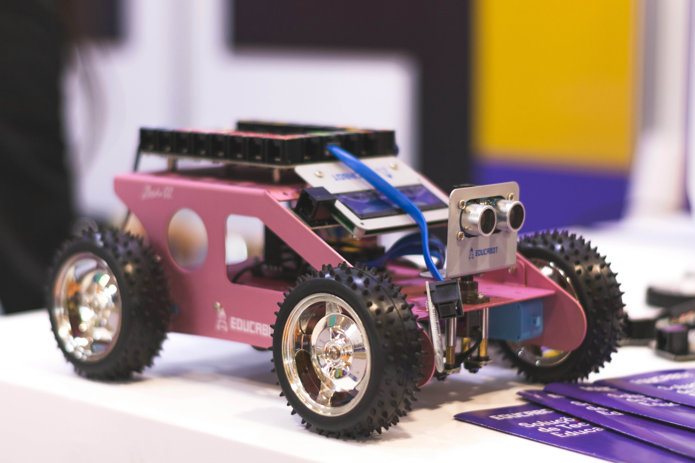

Physical Projects
Hardware, electronics, and more
Featured Project
Arduino-Based trash lid with proximity sensor
A lid made to keep your pets out of your garbage using two servos and a ultrasonic sensor module.
Arduino
IoT
Electronics
Duration: 3 months
Tools Used: Arduino IDE, Fusion 360, tinkercad
More Physical Projects
Alarm Clock on Wheels
A smaller motorised veichle that is meant to make you more active in the morning by forcing you to move to turn of alarm
Arduino
IoT
Electronics
View Details

Small motorised veichle
A small car that is meant to navigate obstecals using ultrasonic sensor
Arduino
Fusion 360
Electronics
Time and distance monitor
A LED screen that prints distance and time given to it from the ultrasonic sensor and rtc module
Arduino
IoT
Electronics